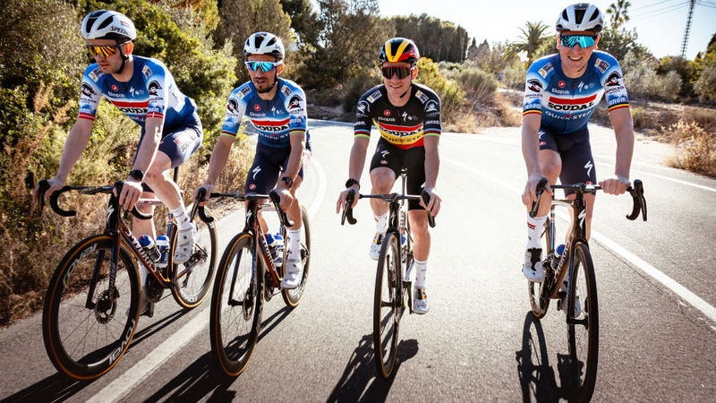
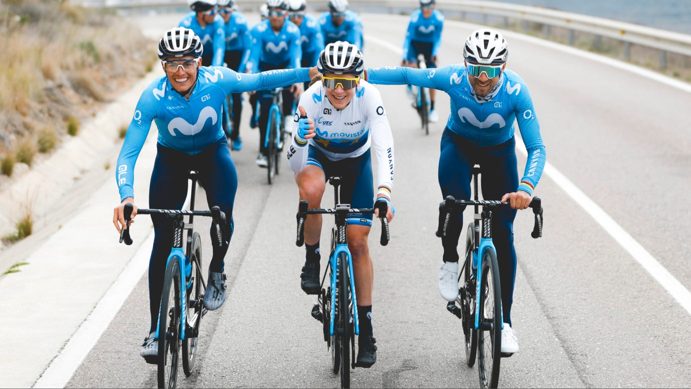

TEAM VISMA

Team Visma | Lease a Bike es un equipo ciclista profesional de los Países Bajos con
licencia UCI WorldTeam, por lo taanto participa en carreras del UCI WorldTour.
También toman parte en algunas carreras del Circuito Continental. De 1996 a 2012
fue patrocinado por el banco neerlandés Rabobank.
Mas información aqui
SOUDAL QUICK-STEP
 Soudal Quick-Step, antes conocido como Omega Pharma-Quick Step y
Deceuninck-Quick Step entre otros, es un equipo ciclista profesional de
Bélgica de categoría UCI WorldTeam.
Participa del UCI WorldTour así como de
algunas carreras del Circuito Continental del UCI Europe Tour.
Mas información aqui
MOVISTAR TEAM
 Banesto Movistar Team fue un equipo profesional ciclista español fundado en 1980 inicialmente
denominado Reynolds con el patrocinio de la empresa de aluminio y dirigido por
José Miguel Echavarri y Eusebio Unzué.
Mas información aqui
BORA-HANSGROHE

El Red Bull-BORA-hansgrohe es un equipo ciclista profesional alemán de categoría
UCI WorldTeam.
Participa del UCI WorldTour así como de algunas carreras del Circuito
Continental del UCI Europe Tour.